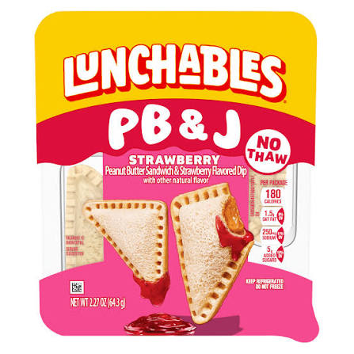

Home
PB&J

Remember being a kid? Remember how your mom would drink her juice and not want to cook your dinner? That's when you learned to make this treat!
So much peanutbutter you couldn't open your mouth for an hour, too bad your dad never brought that milk back.
Ingredients
- 2 Slices of bread (your choice!)
- 1 Jar of peanutbutter (sub other nut butters if you want!
- 1 Jar of jelly (your choice!)
- 2 Butterknife (1 if you're a masochist)
- 1 Plate
Instructions
- Place the two slices of bread flat, side by side on the plate.
- Open the jars of peasnut butter and jelly.
- Use 1 butterknife to scoop and spread peanut butter on one slice of bread. Use roughly 1Tbs.
- Use the other butterknife to scoop and spread the jelly on the other slice of bread.
- Put the two slices of bread together with the filling facing eachother.
- Using the 2nd butterknife, cut the sandwich to the sape you like and enjoy!